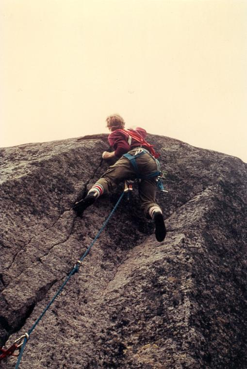

Gullberget
Allmänt
Gullberget ligger drygt två mil från Söderhamn, sex km från Bergvik.
Kommunikationer
Med bil; från länsväg 301 kör man vid en skylt "Bergvik~5" mot
Bergvik. Sex km från bron i Bergvik, i riktning mot Stråtjära och
Holmsveden, ses berget som en skogsklädd höjd på höger sida. I och med
att ett stort kalhygge gjorts närmast vägen syns klipporna tydligt. Ca
200 m före en skogstjärn, mitt emot en halvmeterhög sprängvägg
parkerar man. Härifrån leder en stig upp till stora klippan.
Ungefärliga GPS-koordinater för klippan: Lat: N 61º 12' 46.37" Long: E 16º 49' 59.11"
Historik
Klipporna
Här finns två klippor. Den stora klippan är av 8-15 m höjd och har sju
leder, vilka alla är renborstade från lavar. Vidare finns en del små
boulderproblem på toppen. Klippan är av granit av god kvalitet med små
fina sprickor. Nedstigningen ligger till höger om väggen. Den lilla
klippan, som ligger ca 50 m till vänster om den stora, består i
princip bara av gigantiska klippblock ihoppusslade till en klippa.
Lilla klippan är inte renborstad, och rekomenderas ej.
Stora klippan

- 1
- Karins spricka
- 3+
- Fritt: Mikael Bäckman och Per Calleberg, 1980 Följer en sluttande, ofta blöt, kamin upp till en stor hylla. Därefter ett hörn som vetter åt höger till toppen.
- 2
- A short trip to space
- 5+
- Fritt: Kent Andersson och Per Calleberg, 1981 Startar från toppen av ett flak, går upp i en avsmalnande kamin och följer sedan sprickan till toppen. Välsäkrad.
- 3
- Initiation
- 4+
- Fritt: Mikael Bäckman, Per Calleberg och Gunnar Larsson, 1979 Går uppför en kort vägg, över en hylla, följer nischen ovanför till en gran. Sedan följer man rännan ovanför till toppen.
- 4
- Klass mot klass
- 5
- Fritt: Birger Hedlund, 1984 Går upp i en grov spricka runt hörnet, strax till höger om "Styrkans hemvist". Fortsätt uppför svaet ovanför tills man kommer in på "Trappan".
- 5
- Vandaler i vildmarken
- 5
- Tunn spricka till höger om "Klass mot klass".
- 6
- Styrkans hemvist, show of strength
- 6-
- Diagonal jamspricka på en svagt övergängande vägg. Leder upp till överhänget på "Trappan". Välsäkrad.
- 7
- Trappan, L'escalier de la lune
- 5
- Fritt: Mikael Bäckman och Kent Andersson, Kombinationen av Styrkans hemvist och Trappan ger en trestjärnig led [[Bild:3star.png]]. Följer ett tydligt dieder upp till ett taköverhäng. Detta undviks genom en hangeltravers åt höger till en hylla. Följ sprickan ovanför till toppen. Välsäkrad.

Lilla klippan
- 8
- Nedstigen
- 2
- Slipprig, storblockig, kaminartad företeelse.
- 9
- The giant stone eater
- 5
- Följer en jamspricka i ett litet hörn, som börjar en liten bit upp på väggen. Där sprickan slutar, kliver man ut vänster och når strax toppen.
- 10
- Åkes avfall
- 4+
- Fritt: Birger Hedlund, 1984 Startar strax till höger om ett markant dieder. Följer en diagonal linje upp åt höger. Gemensamt utsteg med "The Giant Stone Eater".
- 11
- Boulderproblem brukar man inte döpa
- 5+
- Ett rent, markerat dieder.
- 12
- Return of the king
- 5-
- Trång kamin som vidgar sig uppåt.
- 13
- Små gröna män
- 3+
- Där kaminen på "Return of the king" börjar, traverserar man ut åt vänster på en smal hylla och klättrar sedan det mossiga hörnet ovanför.
Kategori:Saknar karta
Kategori:Saknar kolumner
Kategori:Hälsingland
Kategori:Trad
Kategori:Hälsingland
Copyright (C) Permission is granted to copy, distribute and/or modify this document under the terms of the GNU Free Documentation License, Version 1.3